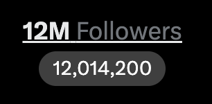

恭喜CZ大表哥粉丝过12M，币安一直都很稳
每个人生活都需要货币，不过大部分人对Crypto的接受度并不高，反而是加密货币连通法币这块（U卡、交易所提法币）需求很大
在我看来，Crypto在跨境交易这块具有便利性，同时可能因为部分合规原因，会让一些国家的政府不开心。在中国，确实是突破外汇管制的一种办法，特别是经济下行年代政府在加强税收
像Stripe、微信（财付通）、京东金融都在给AI提供限额的钱包，让社会大众体验人工智能对生活带来的改善，我觉得是有积极向上的作用。不过未来的发展，一切基础都建立在世界和平的情况下，那是理想乌托邦了

每个人生活都需要货币，不过大部分人对Crypto的接受度并不高，反而是加密货币连通法币这块（U卡、交易所提法币）需求很大
在我看来，Crypto在跨境交易这块具有便利性，同时可能因为部分合规原因，会让一些国家的政府不开心。在中国，确实是突破外汇管制的一种办法，特别是经济下行年代政府在加强税收
像Stripe、微信（财付通）、京东金融都在给AI提供限额的钱包，让社会大众体验人工智能对生活带来的改善，我觉得是有积极向上的作用。不过未来的发展，一切基础都建立在世界和平的情况下，那是理想乌托邦了

12m crypto followers. 🙏
Crypto is not going away. AI will need to use money. You will need money. 🤷♂️ https://t.co/LEWT4ZevLm
Crypto is not going away. AI will need to use money. You will need money. 🤷♂️ https://t.co/LEWT4ZevLm